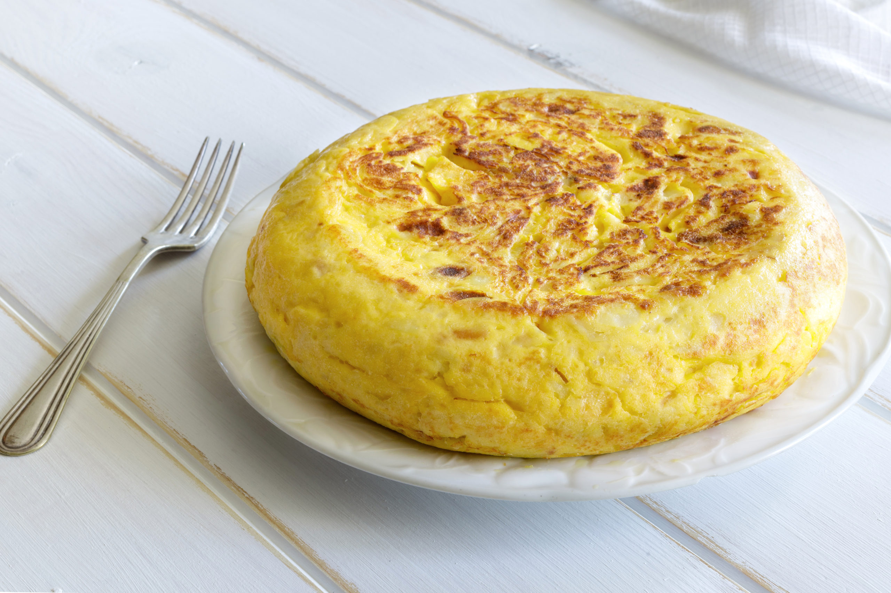

Tortilla de Patatas
Ingredientes
- 4 patatas medianas
- 5 huevos
- 1 cebolla (opcional)
- Aceite de oliva virgen extra
- Sal al gusto

s
Proceso de elaboración
- Pelar, lavar y cortar las patatas y la cebolla en trozos pequeños.
- Freír las patatas y la cebolla en una sartén con abundante aceite a fuego medio.
- Escurrir el aceite cuando las patatas estén tiernas.
- Batir los huevos en un bol grande y añadir una pizca de sal.
- Mezclar las patatas y la cebolla con el huevo batido.
- Cuajar la mezcla en una sartén con unas gotas de aceite por ambos lados.
Volver al menú principal